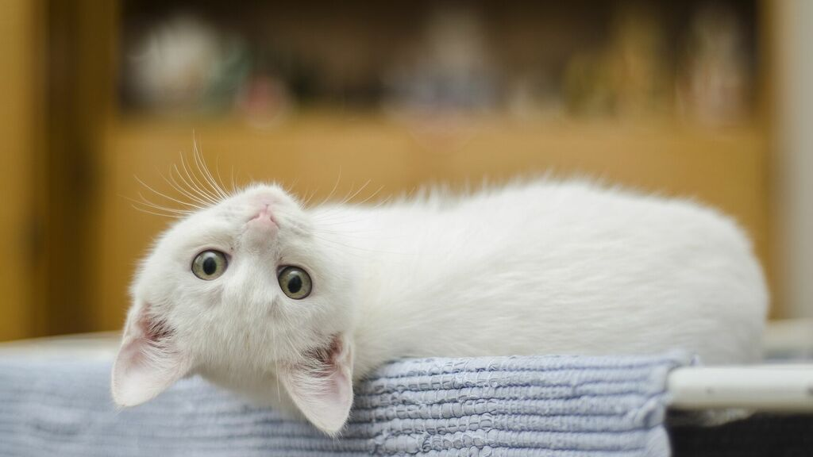
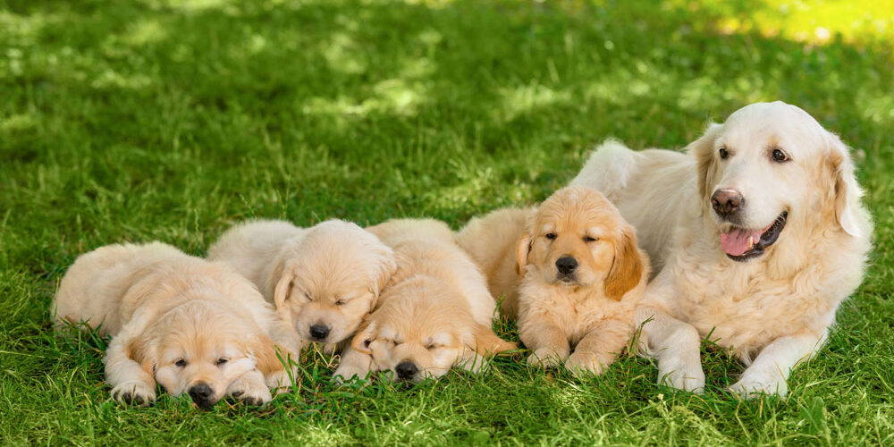
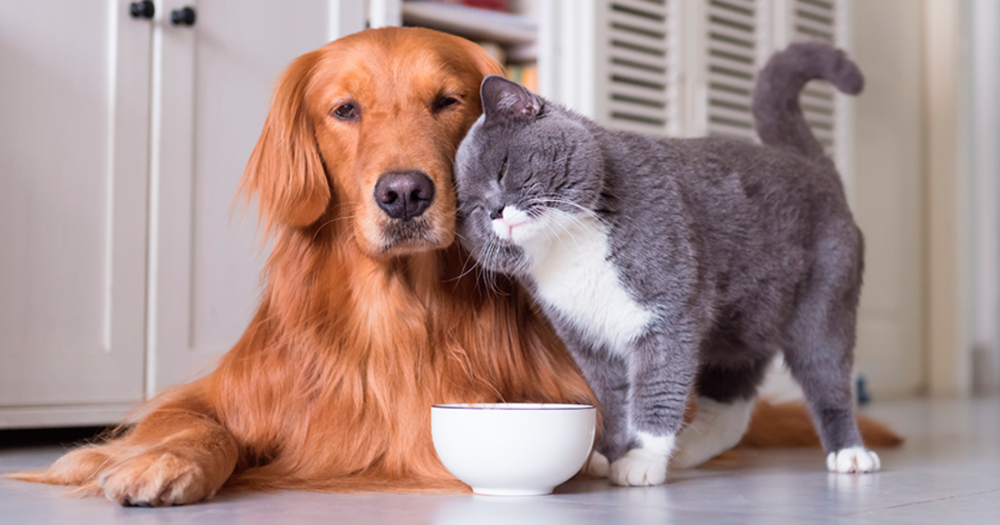

Existen alrededor de 100 razas de gatos que han sido reconocidas y algunas otras que aún no logran dicho reconocimiento. Es decir, que todos los datos que te mencionaremos abajo acerca de la descripción de un gato, están sujetos a la variación que la raza traiga consigo. Estas variaciones responden mayoritariamente a mutaciones que una vez presentada en el gato, se ha trabajado para mantenerlas y dotarlos de una mayor belleza. Los gatos son mascotas de tamaño pequeño y su peso medio oscila en los 5 kg. Sin tomar en cuenta su cola, la longitud que alcanzan es de aproximadamente medio metro. Esto en términos generales, ya que hay ejemplares que superan con creces el peso medio y medidas manifestadas anteriormente. Generalmente cuentan con una gruesa capa de pelo, el cual cambia con las estaciones y queda adherido a cualquier superficie en la que el gato se pose. Sin embargo, no hay pelaje que un buen cepillado no pueda dejar en óptimas condiciones y reducir su pérdida significativamente. Por otra parte, existen unas pocas razas que no tienen pelo. Igualmente existen aquellas que presentan pelo largo, corto o semilargo, llamando la atención los gatos con un manto más peculiar, el cual puede ser rizado, de alambre, etc. Algo muy importante a tomar en cuenta en la descripción de un gato es que se trata de un animal carnívoro estricto. Por lo tanto, darle las sobras de la comida como a veces se hace con los perros, puede resultar muy perjudicial para la salud, excepto que se trate de alimentos muy seleccionadas, bien de pescado, carne de res o de pollo hervido y con cero condimentos, claro está.
Los perros tienen un hocico alargado (en casi todas las razas) con dientes afilados. Tienen también grandes molares que contribuyen a una buena masticación. Aunque ven bien, usan mayormente su oído y su olfato, sentidos que tienen muy desarrollados y que son muy prácticos para el humano. Tienen una cola larga que les da equilibrio al correr o andar, pero también les sirve para mostrar su estado de ánimo. Tienen una gran lengua que suelen sacar cuando están cansados o tienen calor, eso les ayuda a regular su temperatura corporal. Estos animales suelen pesar entre 5 y 60 quilos, valor que varía en función de la raza. Tienen una temperatura corporal mayor que la nuestra, de 39 grados.
Se cree erróneamente que el animalismo es tener un cariño especial a cierto tipo de animales o alegar que se prefiere a los animales sobre los humanos. El animalismo va mucho más allá, el animalismo es mucho más exigente, profundo y transformador. El animalismo es un compromiso que equipara los derechos de los animales no humanos a los propios. Como aspirante a animalista total, debes saber que tu meta es ser vegano y antiespecista. Las personas veganas son aquellas que optan por productos y actividades libres de maltrato animal. Las antiespecistas son las que no discriminan a otros seres en función de la especie a la que pertenecen. Ser vegano y antiespecista, en otras palabras, un “perfecto animalista”, se consigue al culminar un proceso que requiere acumular mucha información y cuestionar, no sólo intelectualmente, muchos de los hábitos mayoritarios. Para tomar las decisiones de manera correcta y continuada es importante enfocar la transformación como una ganancia o una liberación, no como un sacrificio y aún menos como una pose. Dejar de comer productos de origen animal puede ser la primera etapa de un largo trayecto. El siguiente paso es abandonar los lácteos, los huevos y la miel. Quien ame a los animales no sólo deja de comer carne si no que se libera de consumir productos que los animales producen para ellos mismos: ¡no para que se lo arrebatemos! Es popular la vertiente gastronómica del veganismo pero va mucho más allá. Un vegano no usa productos obtenidos de la explotación animal. Los zapatos, la correa del reloj, el cinturón, el monedero, el bolso o el maletín,… son algunos ejemplos de productos cotidianos vinculados a la explotación animal porque suelen ser de cuero. 